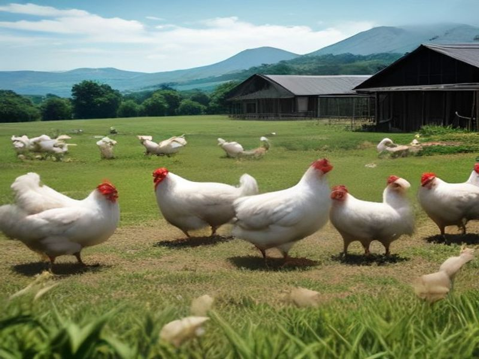
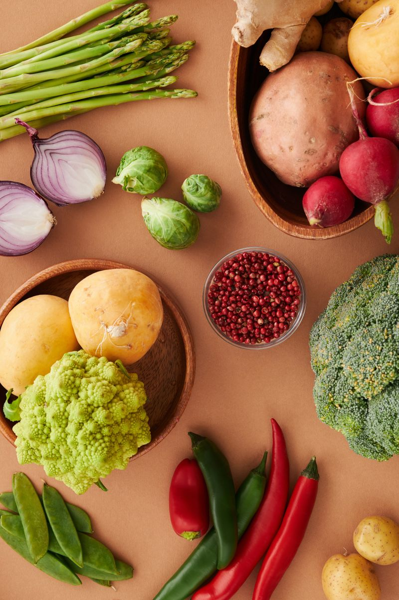
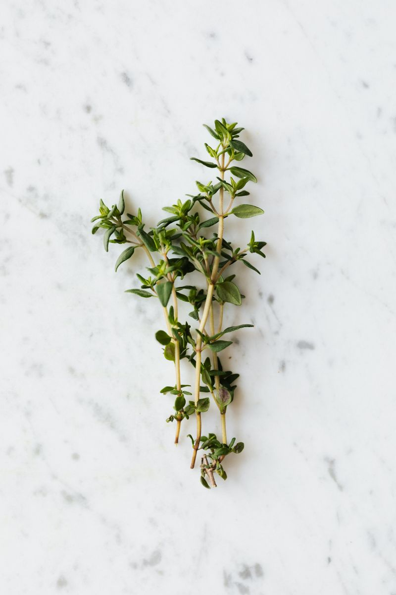
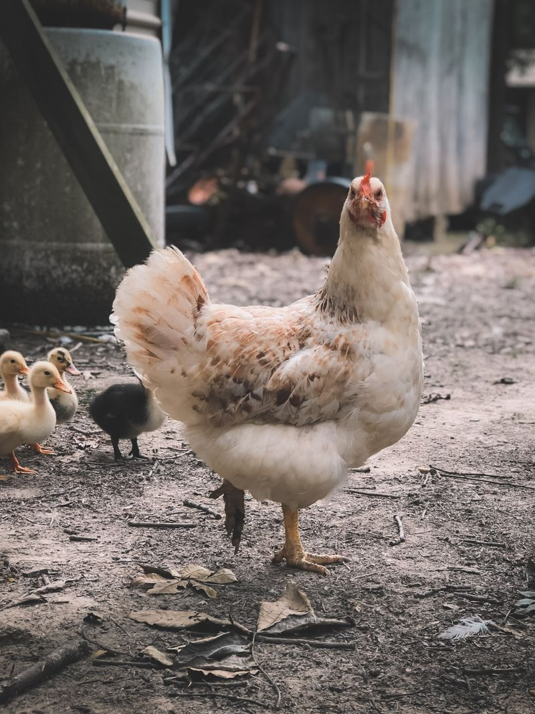
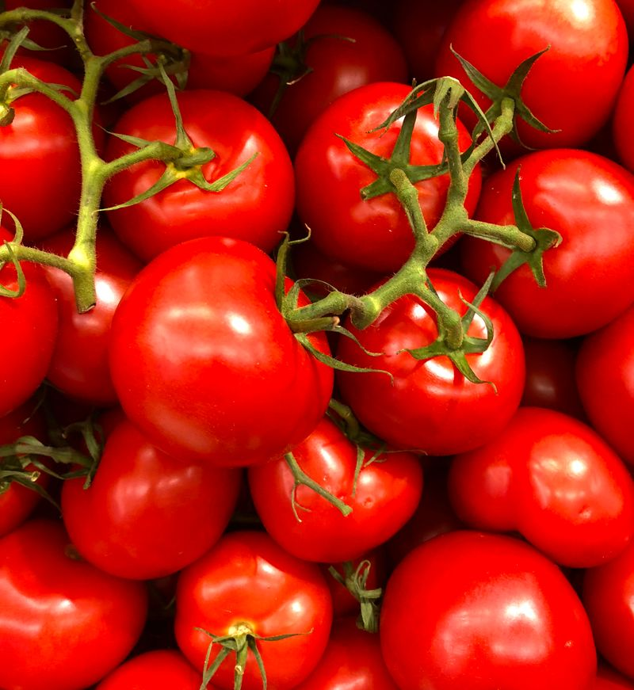
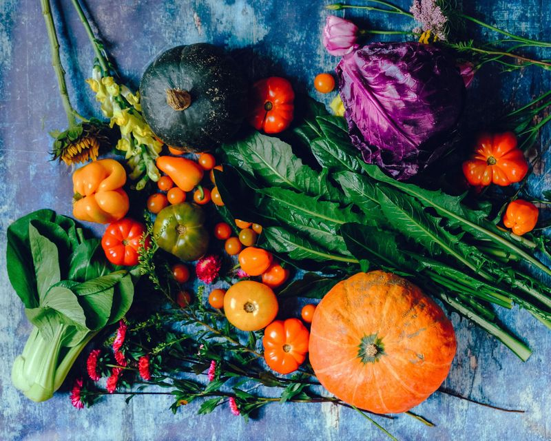
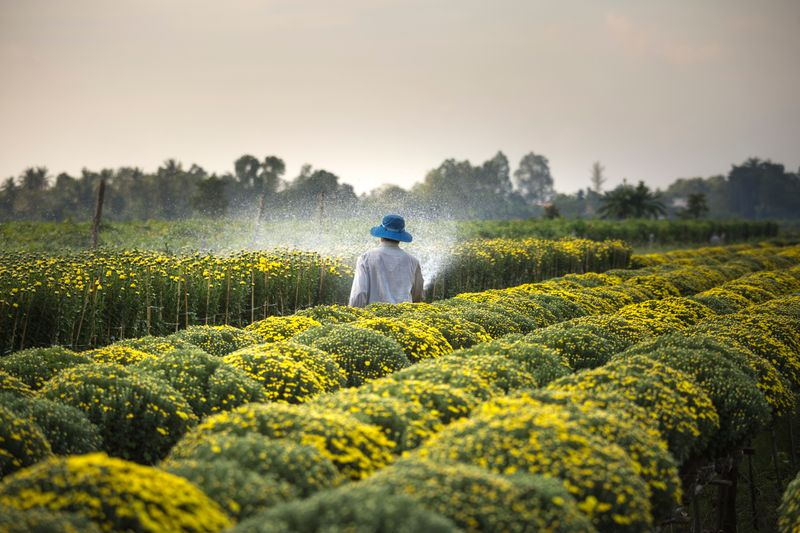
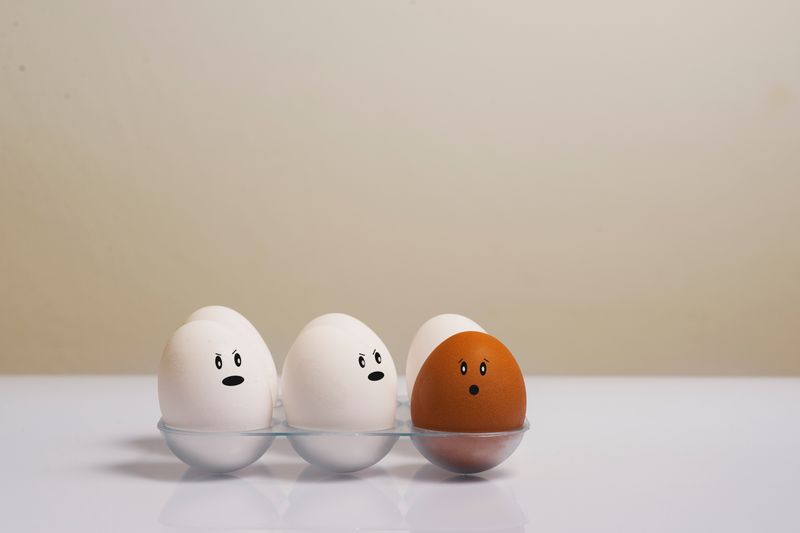
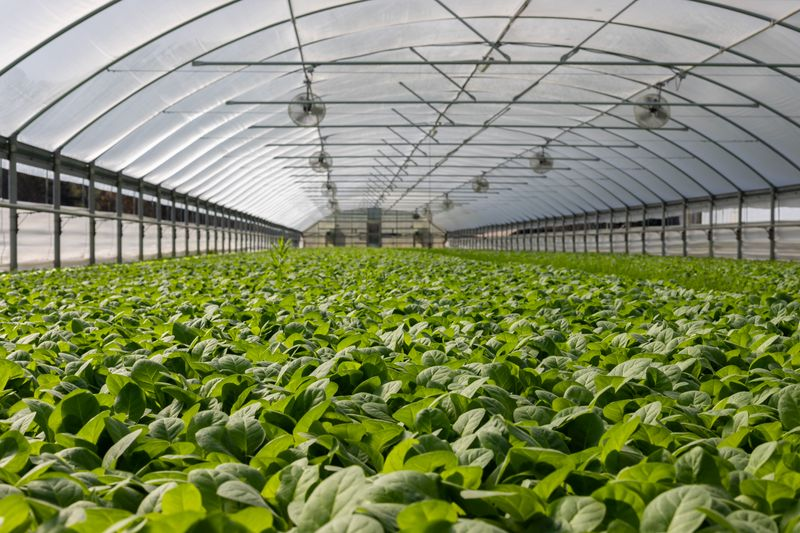

Free-RangePasture-Raised Broilers
Healthy white broilers foraging freely on sunny open pastures with clean borehole water and natural grains.
 Nana Banana
Nana Banana
Nana Banana Harvest
Golden, sun-ripened organic bananas harvested with rich natural sweetness and zero artificial ripening chemicals.
 Orchard
Orchard
Banana Grove & Canopy
Lush broad-leaf banana palms flourishing with organic compost nourishment and Highveld sunlight.

VegetablesOrganic Swiss Chard
Vibrant, crisp leafy greens grown in companion-planted beds fed by our own animal compost.

HerbsCulinary Herb Harvest
Aromatic bundles of sweet basil, parsley, and rosemary tied fresh for local kitchens and vendors.
Pasture-Born Goat Kids
Young healthy kids grazing naturally alongside the mother herd for rotational pasture regeneration.

HeritageHeritage Runner Chickens
Hardy, active foraging hens prized for traditional cooking and authentic natural South African flavor.

HarvestVine-Ripened Tomatoes
Our very first crop established in 2021 — sweet, juicy tomatoes thriving in manure-enriched soil.

Produce CrateFresh Weekly Produce Crates
Packed on order morning with tomatoes, broccoli, beetroot, and green beans for direct city delivery.

InfrastructureSeedling Greenhouse
Nurturing strong organic seedlings protected from extreme Highveld weather before planting out.

Farm EggsFarm-Fresh Free Range Eggs
Golden-yolk nutritious eggs collected daily from our pasture-roaming hens.
 Regenerative
Regenerative
Rich Organic Living Soil
Hands-on regenerative soil stewardship turning farm manure and plant waste into dark, fertile compost.

Farm LifeMorning Harvest Work
Carefully hand-harvesting greens at daybreak to capture optimum hydration and morning crispness.
 Conservation
Conservation
Clean Water Dam
Sustainable borehole water storage providing life to our animals, banana trees, and vegetables.
 Farm to Table
Farm to Table
Honest Nourishing Food
Real food straight from real soil — bringing families back to wholesome, chemical-free home dining.